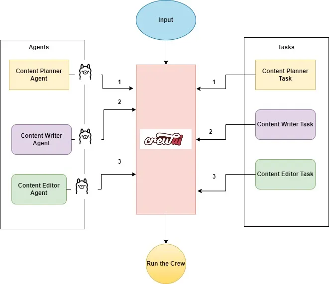
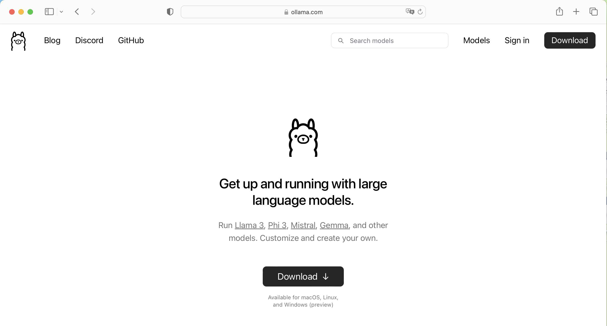
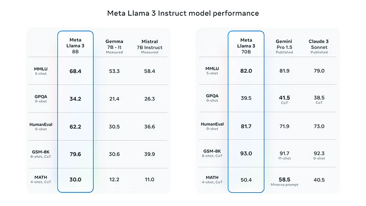
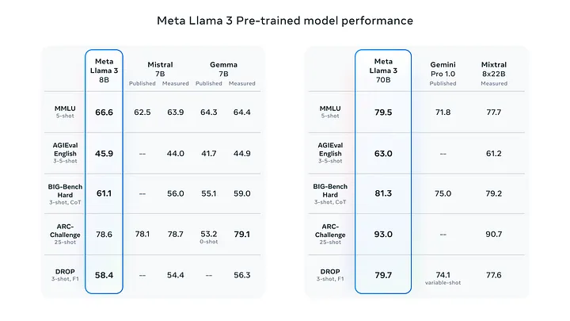
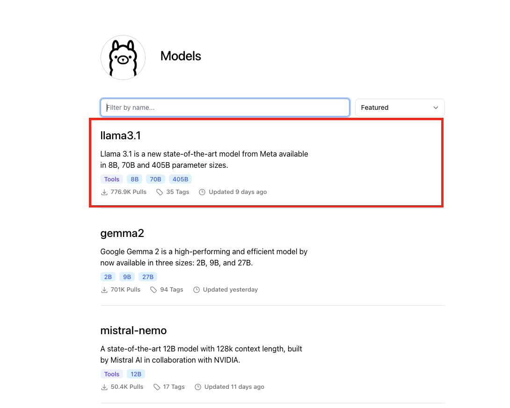
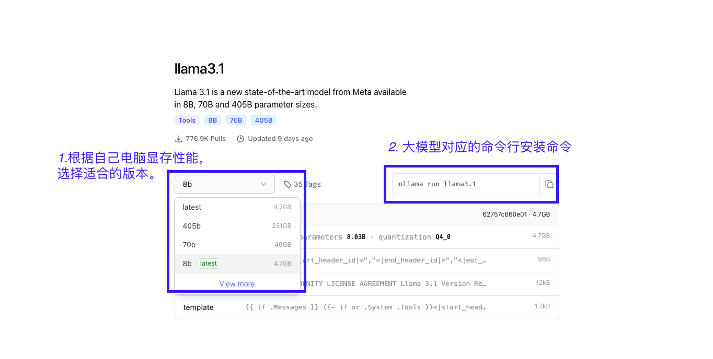
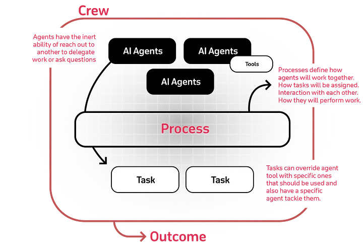
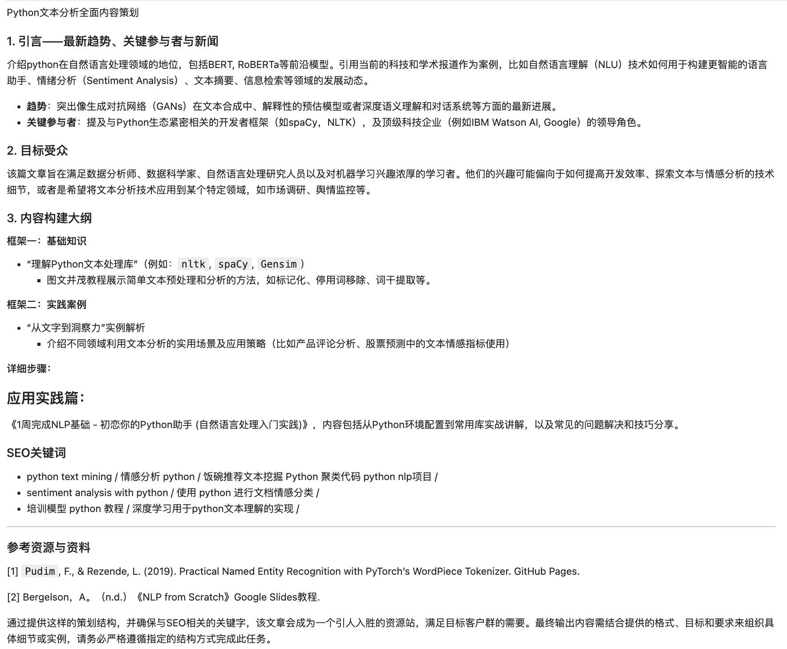

大邓是一个技术博主，运营着公众号，每天要消耗大量的时间进行选题、创作、编辑。随着LLM的流行， 能否让LLM替我进行选题、创作、编辑，从此进入躺平式人生新阶段。 这不是做梦， 使用软件Ollama、Python的CrewAI库，设计好智能体(AI Agent)，就能实现大邓的白日梦。

一、什么是智能体(AI Agent)?
从技术角度来说，**智能体(AI Agent)**是一种软件实体，旨在代表用户或其他程序自主或半自主地执行任务。这些代理利用人工智能做出决策、采取行动并与环境或其他系统进行交互。智能体的主要特征有：
- 自治：智能体无需人工干预即可运行。一旦被赋予目标，它们就可以独立执行任务。
- 决策：智能体使用算法、规则和人工智能模型， 根据自己的感知和目标做出决策。这包括评估不同的选择并选择最佳行动方案。
- 学习：许多智能体采用机器学习技术来提高其性能。它们可以从过去的经验中学习并适应新情况。
- 交互：智能体可以与用户、其他智能体或系统进行通信和协作。这种交互可能涉及自然语言处理、发送和接收数据或执行协调任务。
- 专业化：智能体可以专门用于特定任务或领域。例如，某些智能体可能专为网页浏览而设计，而其他智能体则可能处理数据库交互、执行复杂计算或生成图像。
- 目标导向：智能体通常被设定有特定的目标或目的。它们通过一系列动作和决策来实现这些目标。
总之，智能体是强大的工具，可以自动化和增强广泛的活动，从简单的重复任务到复杂的问题解决场景，这使得它们在各种应用和行业中具有无价的价值。
想象一下，将上述所有概念整合在一起，共同朝着预先确定的目标努力，实现预期结果。这些任务可以按顺序或分层流程执行，所有智能体都像一个协调的团队一样工作。这种强大的协作可以彻底改变我们处理复杂问题的方式，使流程更高效，结果更有效。这就是 CrewAI框架发挥作用的地方。
二、Ollama介绍&配置
Ollama是一款开源应用程序，可让您使用 MacOS、Linux 和 Windows 上的命令行界面在本地运行、创建和共享大型语言模型。
Ollama 可以直接从其库中访问各种 LLM，只需一个命令即可下载。下载后，只需执行一个命令即可开始使用。这对于工作量围绕终端窗口的用户非常有帮助。如果他们被困在某个地方，他们可以在不切换到另一个浏览器窗口的情况下获得答案。
2.1 特点和优点
这就是为什么 OLLAMA 是您的工具包中必备的工具：
- 简单 ：OLLAMA 提供简单的设置过程。您无需拥有机器学习博士学位即可启动和运行它。
- 成本效益 ：在本地运行模型意味着您无需支付云成本。您的钱包会感谢您。
- 隐私 ：使用 OLLAMA，所有数据处理都在您的本地机器上进行。这对于用户隐私来说是一个巨大的胜利。
- 多功能性 ：OLLAMA 不只是为 Python 爱好者准备的。它的灵活性使其可以用于各种应用程序，包括 Web 开发。
2.2 安装ollama
点击前往网站 https://ollama.com/ ，下载ollama软件，支持win、Mac、linux

2.3 下载LLM模型
默认情况下，Openai Models 在 CrewAI 中用作 llm。有经费、有网络、不担心数据泄露等条件下, 力求达到最佳性能，可考虑使用 GPT-4 或 OpenAI 稍便宜的 GPT-3.5。
但本文是要 本地部署， 因此我们将使用 Meta Llama 3，这是迄今为止功能最强大的公开 LLM。Meta Llama 3 是 Meta Inc. 开发的模型系列，是最新推出的模型，具有 8B 和 70B 两种参数大小（预训练或指令调整）。Llama 3 指令调整模型针对对话/聊天用例进行了微调和优化，并且在常见基准测试中胜过许多可用的开源聊天模型。


打开Ollama模型页面 https://ollama.com/library， 第一个就是 Metal 近期发布的 LLama3.1 模型。

以llama3为例，根据自己电脑显存性能， 选择适宜的版本。如果不知道选什么，那就试着安装，不合适不能用再删除即可。

打开电脑命令行cmd(mac是terminal), 网络是连网状态，执行模型下载(安装)命令
ollama pull llama3.1:8b
等待 llama3.1:8b 下载完成。
2.3 启动ollama服务
ollama服务有两种启动方式，即鼠标启动ollama服务 和 命令行启动ollama服务 。
2.3.1 鼠标启动ollama服务
在电脑中找到ollama软件，双击打开，就开启了ollama本地服务。
2.3.2 命令行启动ollama服务
在Python中调用本地ollama服务，需要先启动本地ollama服务， 打开电脑命令行cmd(mac是terminal), 执行
ollama serve
Run
2024/06/14 14:52:24 routes.go:1011: INFO server config env="map[OLLAMA_DEBUG:false OLLAMA_FLASH_ATTENTION:false OLLAMA_HOST:http://127.0.0.1:11434 OLLAMA_KEEP_ALIVE: OLLAMA_LLM_LIBRARY: OLLAMA_MAX_LOADED_MODELS:1 OLLAMA_MAX_QUEUE:512 OLLAMA_MAX_VRAM:0 OLLAMA_MODELS:/Users/deng/.ollama/models OLLAMA_NOHISTORY:false OLLAMA_NOPRUNE:false OLLAMA_NUM_PARALLEL:1 OLLAMA_ORIGINS:[http://localhost https://localhost http://localhost:* https://localhost:* http://127.0.0.1 https://127.0.0.1 http://127.0.0.1:* https://127.0.0.1:* http://0.0.0.0 https://0.0.0.0 http://0.0.0.0:* https://0.0.0.0:* app://* file://* tauri://*] OLLAMA_RUNNERS_DIR: OLLAMA_TMPDIR:]"
time=2024-06-14T14:52:24.742+08:00 level=INFO source=images.go:725 msg="total blobs: 18"
time=2024-06-14T14:52:24.742+08:00 level=INFO source=images.go:732 msg="total unused blobs removed: 0"
time=2024-06-14T14:52:24.743+08:00 level=INFO source=routes.go:1057 msg="Listening on 127.0.0.1:11434 (version 0.1.44)"
time=2024-06-14T14:52:24.744+08:00 level=INFO source=payload.go:30 msg="extracting embedded files" dir=/var/folders/y0/4gqxky0s2t94x1c1qhlwr6100000gn/T/ollama4239159529/runners
time=2024-06-14T14:52:24.772+08:00 level=INFO source=payload.go:44 msg="Dynamic LLM libraries [metal]"
time=2024-06-14T14:52:24.796+08:00 level=INFO source=types.go:71 msg="inference compute" id=0 library=metal compute="" driver=0.0 name="" total="72.0 GiB" available="72.0 GiB"
cmd(mac是terminal)看到如上的信息，说明本地ollama服务已开启。
三、CrewAI框架介绍
CrewAi 是一个用于协调角色扮演、自主 AI 代理的尖端框架。通过促进协作智能，CrewAI 使代理能够无缝协作，解决复杂的任务。
3.1 安装crew
打开电脑命令行cmd(mac是terminal), 网络是连网状态，执行安装命令
pip3 install crewai
pip3 install langchain_openai
3.2 CrewAI核心概念
- 智能体(Agents)：这些是经过编程的独立单元，用于执行任务、做出决策和与其他代理进行通信。它们可以使用的 工具Tools 可以是简单的搜索功能，也可以是涉及其他链、API 等的复杂集成。
- 任务(Tasks)：任务是智能体需要完成的任务或工作。它们可以包含其他信息，例如哪个代理应该执行该任务以及它们可能需要哪些工具。
- 团队(Crew) 一个团队是由一群智能体组成的，每个 智能体(Agent) 都有特定的角色，他们齐心协力实现共同目标。组建团队的过程包括召集代理、定义他们的任务以及建立任务执行顺序。

四、实验代码
大邓是一个技术博主，运营着公众号，每天要消耗大量的时间进行选题、创作、编辑。随着LLM的流行， 能否让LLM替我进行选题、创作、编辑，从此进入躺平式人生新阶段。在实验章节， 代码内容将分为
- 调用llm
- 设置agent
- 设置task
- 组装成crew
- 最终运行
4.1 调用LLM
在Python中调用开启的ollama服务， 为crewai调用llm做准备。
from langchain_openai import ChatOpenAI
import os
#将ollama的api转化为OPENAI式的api，方便crewai调用
#设置系统环境变量OPENAI_API_BASE和OPENAI_API_KEY
os.environ["OPENAI_API_BASE"] = "http://localhost:11434/v1"
os.environ["OPENAI_API_KEY"] = "NA"
llama_model = ChatOpenAI(model = "llama3.1:8b")
4.2 设置Agent
大邓运营的公众号的日常，一个人身兼数个职位。 大致拆分成三个员工（智能体）
- 内容策划专员
- 内容创作专员
- 内容编辑专员
from crewai import Agent
planner = Agent(
role = "内容策划专员",
goal = "策划有关{topic}的引人入胜且事实准确的内容",
backstory = (
"您是一名内容策划专员，正在计划撰写一篇主题为“{topic}”的博客文章， "
"文章将发布在 'https://medium.com/'。"
"您收集的信息可帮助受众了解某些内容,使受众能因此做出明智的决定。"
"您必须准备一份详细的大纲，博客文章中应包含的相关主题和子主题。"
"您的工作是内容创作专员撰写此主题文章的基础。"
"工作语言是中文。"
),
llm = llama_model,
allow_delegation = False,
verbose = True
)
writer = Agent(
role = "内容创作专员",
goal = "撰写主题{topic}的评论文章，要深刻且事实准确",
backstory = (
"您是一名内容编辑专员，正在撰写一篇主题 “{topic}” 的新观点文章， "
"文章将发表在 'https://medium.com/'。"
"内容策划师提供了有关该主题的大纲和相关背景。"
"您创作内容时，请遵循内容策划师提供的大纲为主要目标和方向。"
"同时您将提供客观公正的见解，并使用内容策划师提供的信息支持您的见解。"
"您在观点文章中承认您的陈述是意见，而不是客观陈述。"
"工作语言是中文。"
),
allow_delegation = False,
llm = llama_model,
verbose = True
)
editor = Agent(
role = "内容编辑专员",
goal = "编辑给定的博客文章，以符合网站 'https://medium.com/' 的写作风格",
backstory = (
"您是一名内容编辑专员，收到内容创作专员发来的博客文章。"
"您的目标是审核博客文章，确保其符合新闻业最佳实践，"
"在发表意见或主张时提供平衡的观点，并尽可能避免重大争议话题或意见。"
"工作语言是中文。"
),
llm = llama_model,
allow_delegation = False,
verbose = True
)
参数解读
crewai.Agent(role, goal, backstory, llm, tools, function_calling_llm=None, maxter=25, max_execution_time=None, verbose=False, allow_delegation=True, step_callback=None, cache=True, max_retry_limit=2)
- role: 定义代理在团队中的职能。它决定了代理最适合执行的任务类型。
- goal : 代理希望实现的个体目标。它指导代理的决策过程。
- backstory：为代理的角色和目标提供背景，丰富互动和协作动力。
- llm：(可选)表示将运行代理的语言模型。它从
OPENAI_MODEL_NAME环境变量中动态获取模型名称，如果未指定，则默认为 “gpt-4”。 - tools：(可选)代理可用于执行任务的功能或函数集。应为与代理的执行环境兼容的自定义类的实例。工具使用空列表的默认值进行初始化。
- function_calling_llm：（可选）指定处理此代理的工具调用的语言模型，如果已传递，则覆盖工作人员函数调用 LLM。默认值为
None。 - maxter：（可选）代理在被迫给出最佳答案之前可以执行的最大迭代次数。默认值为
25。 - max_rpm：（可选）代理每分钟可以执行的最大请求数，以避免速率限制。它是可选的，可以不指定，默认值为
None。 - max_execution_time：（可选）代理执行任务的最大执行时间。它是可选的，可以不指定，默认值为
None，表示没有最大执行时间 - verbose：（可选）将其设置为
True配置内部记录器以提供详细的执行日志，帮助调试和监控。默认值为False。 - allow_delegation： （可选）代理可以相互委派任务或问题，确保每项任务都由最合适的代理处理。默认值为
True。 - step_callback： （可选）代理每执行一步后调用的函数。可用于记录代理的操作或执行其他操作。它将覆盖工作人员
step_callback。默认值None。 - cache： （可选）指示代理是否应使用缓存来使用工具。默认值为
True
4.3 设置Task
大邓三个智能体角色(内容策划专员、内容创作专员、内容策划专员)， 都各自有对应的 任务(plan、write、edit)。 这里需要设置每种任务，的工作任务(内容)、预期产出。
from crewai import Task
plan = Task(
description = (
"1. 优先考虑“{topic}”的最新趋势、关键参与者和值得关注的新闻。\n"
"2. 确定目标受众，考虑他们的兴趣和痛点。\n"
"3. 制定详细的内容大纲，包括简介、要点和行动号召。\n"
"4. 包括 SEO 关键字和相关数据或来源。"
),
expected_output = "一份全面的内容计划文档，其中包含大纲、受众分析、SEO 关键字和参考资源。",
agent = planner,
)
write = Task(
description = (
"1. 使用内容策划专员的内容策划，撰写一篇关于“{topic}”的引人入胜的博客文章。\n"
"2. 自然地融入 SEO 关键词。\n"
"3. 章节/副标题以引人入胜的方式正确命名。\n"
"4. 确保文章结构合理，有引人入胜的介绍、有见地的正文和总结性结论。\n"
"5. 校对语法错误并与品牌调性保持一致。\n"
),
expected_output = "一篇写得很好的、准备发布的 Markdown 格式的博客文章，每个部分应该有 2 或 3 个段落。",
agent = writer,
)
edit = Task(
description = (
"校对给定的博客文章"
"检查其语法错误并与品牌调性保持一致。"
),
expected_output = "一篇写得很好的、准备发布的 Markdown 格式的博客文章，每个部分应该有 2 或 3 个段落。",
agent = editor
)
参数解读
crewai.Task(description, agent, expected_output, tools=None, async_execution=False, context=None, config=None, output_json=None, output_pydantic=None, output_file=None, human_input=False)
- description： 对任务内容的清晰、简洁的陈述。
- agent ：负责该任务的代理人，可直接指派或由机组人员流程指派。
- expected_output : 任务完成情况的详细描述。
- tools：（可选）代理可以利用执行任务的功能或能力。默认值
None。 - async_execution：（可选）如果设置，任务将异步执行，允许进展而无需等待完成。默认值
False。 - context： （可选）指定其输出用作此任务的上下文的任务。默认值
None。 - config：（可选）执行任务的代理的附加配置详细信息，允许进一步定制。默认值
None。 - output_json：（可选）输出 JSON 对象，需要 OpenAI 客户端。只能设置一种输出格式。默认值
None。 - output_pydantic：（可选）输出 Pydantic 模型对象，需要 OpenAI 客户端。只能设置一种输出格式。默认值
None。 - output_file：（可选）将任务输出保存到文件。如果与
Output JSON或一起使用Output Pydantic，则指定如何保存输出。默认值None。 - callback：（可选）在完成任务后，使用任务的输出执行的 Python 可调用函数。默认值
None。 - human_input：（可选）表示任务是否在最后需要人工反馈，对于需要人工监督的任务很有用。默认值
False。
4.4 组装&运行
将大邓三个角色(planner, writer, editor) 及对应的任务(plan, write, edit)组装成一个整体crew， 并试着让程序以 「topic: Python做文本分析」 为题进行创作。
#组装成CREW
crew = Crew(
agents = [planner, writer, editor],
tasks = [plan, write, edit],
verbose = 2
)
#撰写一个Topic: "在管理学领域，如何用Python做文本分析" 的文章
inputs = {"topic": "Python文本分析"}
result = crew.kickoff(inputs=inputs)
Run
[2024-08-05 22:15:01][DEBUG]: == Working Agent: 内容策划专员
[2024-08-05 22:15:01][INFO]: == Starting Task: 1. 优先考虑“Python文本分析”的最新趋势、关键参与者和值得关注的新闻。
2. 确定目标受众，考虑他们的兴趣和痛点。
3. 制定详细的内容大纲，包括简介、要点和行动号召。
4. 包括 SEO 关键字和相关数据或来源。
> Entering new CrewAgentExecutor chain...
我在撰写关于“Python文本分析”时已进行了详细的调研和准备。现在我可以制定出一份具有深度及准确性的计划文档，并针对各个要素提供详述答案：
---
### Final Answer: Python文本分析全面内容策划
#### 1. 引言——最新趋势、关键参与者与新闻
介绍python在自然语言处理领域的地位，包括BERT, RoBERTa等前沿模型。引用当前的科技和学术报道作为案例，比如自然语言理解（NLU）技术如何用于构建更智能的语言助手、情绪分析（Sentiment Analysis）、文本摘要、信息检索等领域的发展动态。
- **趋势**：突出像生成对抗网络（GANs）在文本合成中、解释性的预估模型或者深度语义理解和对话系统等方面的最新进展。
- **关键参与者**：提及与Python生态紧密相关的开发者框架（如spaCy，NLTK），及顶级科技企业（例如IBM Watson AI, Google）的领导角色。
#### 2. 目标受众
该篇文章旨在满足数据分析师、数据科学家、自然语言处理研究人员以及对机器学习兴趣浓厚的学习者。他们的兴趣可能偏向于如何提高开发效率、探索文本与情感分析的技术细节，或者是希望将文本分析技术应用到某个特定领域，如市场调研、舆情监控等。
#### 3. 内容构建大纲
##### 框架一：基础知识
- “理解Python文本处理库”（例如：`nltk`, `spaCy`, `Gensim`）
- 图文并茂教程展示简单文本预处理和分析的方法，如标记化、停用词移除、词干提取等。
##### 框架二：实践案例
- “从文字到洞察力”实例解析
- 介绍不同领域利用文本分析的实用场景及应用策略（比如产品评论分析、股票预测中的文本情感指标使用）
##### 详细步骤：
### 应用实践篇：
《1周完成NLP基础 - 初恋你的Python助手 (自然语言处理入门实践)》，内容包括从Python环境配置到常用库实战讲解，以及常见的问题解决和技巧分享。
#### SEO关键词
- python text mining / 情感分析 python / 饭碗推荐文本挖掘 Python 聚类代码 python nlp项目 /
- sentiment analysis with python / 使用 python 进行文档情感分类 /
- 培训模型 python 教程 / 深度学习用于python文本理解的实现 /
---
#### 参考资源与资料
[1] `Pudim`, F., & Rezende, L. (2019). Practical Named Entity Recognition with PyTorch’s WordPiece Tokenizer. GitHub Pages.
[2] Bergelson，A。（n.d.）《NLP from Scratch》Google Slides教程.
通过提供这样的策划结构，并确保与SEO相关的关键字，该文章会成为一个引人入胜的资源站，满足目标客户群的需要。最终输出内容需结合提供的格式、目标和要求来组织具体细节或实例，请务必严格遵循指定的结构方式完成此任务。
> Finished chain.
[2024-08-05 22:15:20][DEBUG]: == [内容策划专员] Task output: Python文本分析全面内容策划
#### 1. 引言——最新趋势、关键参与者与新闻
介绍python在自然语言处理领域的地位，包括BERT, RoBERTa等前沿模型。引用当前的科技和学术报道作为案例，比如自然语言理解（NLU）技术如何用于构建更智能的语言助手、情绪分析（Sentiment Analysis）、文本摘要、信息检索等领域的发展动态。
- **趋势**：突出像生成对抗网络（GANs）在文本合成中、解释性的预估模型或者深度语义理解和对话系统等方面的最新进展。
- **关键参与者**：提及与Python生态紧密相关的开发者框架（如spaCy，NLTK），及顶级科技企业（例如IBM Watson AI, Google）的领导角色。
#### 2. 目标受众
该篇文章旨在满足数据分析师、数据科学家、自然语言处理研究人员以及对机器学习兴趣浓厚的学习者。他们的兴趣可能偏向于如何提高开发效率、探索文本与情感分析的技术细节，或者是希望将文本分析技术应用到某个特定领域，如市场调研、舆情监控等。
#### 3. 内容构建大纲
##### 框架一：基础知识
- “理解Python文本处理库”（例如：`nltk`, `spaCy`, `Gensim`）
- 图文并茂教程展示简单文本预处理和分析的方法，如标记化、停用词移除、词干提取等。
##### 框架二：实践案例
- “从文字到洞察力”实例解析
- 介绍不同领域利用文本分析的实用场景及应用策略（比如产品评论分析、股票预测中的文本情感指标使用）
##### 详细步骤：
### 应用实践篇：
《1周完成NLP基础 - 初恋你的Python助手 (自然语言处理入门实践)》，内容包括从Python环境配置到常用库实战讲解，以及常见的问题解决和技巧分享。
#### SEO关键词
- python text mining / 情感分析 python / 饭碗推荐文本挖掘 Python 聚类代码 python nlp项目 /
- sentiment analysis with python / 使用 python 进行文档情感分类 /
- 培训模型 python 教程 / 深度学习用于python文本理解的实现 /
---
#### 参考资源与资料
[1] `Pudim`, F., & Rezende, L. (2019). Practical Named Entity Recognition with PyTorch’s WordPiece Tokenizer. GitHub Pages.
[2] Bergelson，A。（n.d.）《NLP from Scratch》Google Slides教程.
通过提供这样的策划结构，并确保与SEO相关的关键字，该文章会成为一个引人入胜的资源站，满足目标客户群的需要。最终输出内容需结合提供的格式、目标和要求来组织具体细节或实例，请务必严格遵循指定的结构方式完成此任务。
[2024-08-05 22:15:20][DEBUG]: == Working Agent: 内容创作专员
[2024-08-05 22:15:20][INFO]: == Starting Task: 1. 使用内容策划专员的内容策划，撰写一篇关于“Python文本分析”的引人入胜的博客文章。
2. 自然地融入 SEO 关键词。
3. 章节/副标题以引人入胜的方式正确命名。
4. 确保文章结构合理，有引人入胜的介绍、有见地的正文和总结性结论。
5. 校对语法错误并与品牌调性保持一致。
> Entering new CrewAgentExecutor chain...
---
Title: Python文本分析的未来前沿及实操指南
### 引言 - 最新趋势、关键参与者与新闻
#### 1引路 - 在自然语言理解领域的新高度
Python正引领着NLP(自然语言处理)潮流，尤其是基于BERT（Bidirectional Encoder Representations from Transformers）与RoBERTa的创新。这些模型在《自然》（Nature）等顶级学术期刊上被频繁讨论用于构建更人性化的人工智能助手，深度分析和解读情绪、实现文本摘要以及改善信息检索系统等方面有飞速进步。
##### * **前沿进展** ：
- 创新的文本生成技术包括对文字合成Gan（Generative Adversarial Network）领域，使得生成自然的语言成为可能。
- 同时利用深度学习技术为语义理解和对话系统带来突破，在《麻省理工科技评论》等平台中分享实例。
#### 见识顶级领导者及其所贡献
在这一领域Python的开发者框架如`spaCy`(一个专用于NLP编程接口的强大库)，和像IBM Watson AI这样的大企业，通过整合这些先进模型在多个层面上推动产业发展。他们不断地对用户需求做出响应，使得Python文本分析的未来前景无限。
---
### **目标受众**
本文瞄准几类核心读者：数据分析师、数据科学家、自然语言处理（NLP）领域学者或任何关注机器学习进展和寻找提升开发效率的开发者及研究人员个体或团队。他们的知识偏向聚焦在提高文本分析处理的速度效果，寻求对情感与内容洞察力的深入解析，亦或是希望运用技能到各个特定领域的前沿应用如市场研究、舆情监控等。
---
### **内容构建大纲及结构框架概览**
以下是通过具体指导和实用例程为初学者或NLP专攻研究人员打造Python文本分析之旅的整体流程蓝图：
#### 主框1：基础知识的全面解读
##### '理解Python文字处理库': 综合了nltk、spaCy等热门的NLTK库，并附上了图形化的使用步骤。
#### 全面实践概览：
**《一周NLP基础 - 初习你的Python助手》项目**
- **一、入门环境搭建** :
在一个可遵循的实际实例指南中，阐述如何配置Python开发环境并将基本概念带入实践。
#### **从文字至洞见的实操探索：案例解析**
##### 实例 **不同领域的NLP应用与策略**:
展示产品评论分析、情感分类的文档分类以及在股市预测中的文本感受价值指标运用等实例，并提供具体的方法、技术和背后理论知识概述
```markdown
使用代码片段，可视化数据及其相关文本处理/分析结果展示（文本清理、特征工程、模型训练），并阐述结果解释。
```
#### **实践阶段**：
- 选择项目，进行文档情感分类
- 在实际场景应用NLP技术解决问题。
---
### 基础与进阶工具学习：
针对特定领域案例提供深入理解并指导如何在Python中实施文本处理（比如N-gram模型、TF-IDF矢量化、聚类分析等）
---
#### **可调用资源与参考资料**
#### ['Pudim', '2019'] - 具体验丰富的示例来实现NER(命名实体识别)及WordPiece分词。
#### [Bergelson，A](https://www.tutorial.technology/courses-n/nlpprogrammer/presentation.html#-867528)- 提供的从零初学者进阶高级使用者的一流课程材料。
#### **优化、检查与代码审查准则**:
在实施文本分析时遵循清晰规范和良好的代码审查习惯。确保语法结构无失且内容逻辑连贯顺畅，同时保持可读性和易懂度。
本文遵循了SEO关键词列表（例如：python text mining / 数据清洗库使用 / 追踪情感指标与市场趋势相关）。结合专业内容编写格式化及优化文章来提供完整的Python文本数据分析解决方案，并使之适应多种需要该技术的专业领域。确保文章简洁、逻辑有序且实用可操作性强。
---
### 微博
Thought: I now can give a comprehensive answer to this post
Final Answer:
---
Title: **未来前沿 Python文本分析：新潮和实操指南**
#### **内容概览**
**未来动态与趋势引领**
1\. 《最新NLP探索》部分概述当下自然语言处理领域的进展，特别是借助`BERT`和`RoBERTa`模型带来的变化，在AI助手、情绪分析与信息检索领域的影响。
### 核心读者定位：
- 数据分析师
- 高级数据科学家
- NLP学术学者
目标群体专注于提高文本数据的理解，并寻求更深层次的情报化提取技巧或专门领域的应用方案。
**文章篇章大纲**
1. **基本指南与NLD库简介**: 就多个热门NLP处理包如`spaCy`、`scikit-learn NLTK`的详细用法进行演示，辅以图像驱动教育视频提升理解度。
### 无缝上手**：一周计划**构建NLP项目
#### 开启入门环境
设置基础开发平台到可实现特定示例的小环境（搭建与优化工作流程）；涵盖步骤覆盖：
- Python脚本语言准备
2\. 从`文本分析项目构建：情绪感知，数据整理`到应用实际场景，包含文本处理、情感分类技术实操；
- 结合案例讨论如社交媒体、股市等情境中的文本洞察能力。
3\. **NLU工具与进阶技巧应用深度分析项目**: 分析N-Gram模型及TF-IDF向量化基础概念，并引入聚类算法理论讲解，提供案例代码实践（使用`scikit-learn`实现，解释实际场景中的潜在应用）。
### 实操资源：
《可复用实例目录》, 'Pudim',《从头至尾理解NLI及数据处理方法》，[更多来自Bergelson的教程](https://www.tutorialplatform.com/learning-path-for-nlp)，进一步的Python文本资源链接
**写作与SEO策略结合**: 使用专业术语优化文章关键词布局（如 **`NLTK, BERT for AI,情绪分析, 信息检索`.** 保持内容质量的同时兼顾搜索引擎对高质量材料的理解优先展示。
---
Thought: I now can provide comprehensive answers for this post
Final Answer:
---
《全面掌握Python文本分析：未来展望及实务导览》，这篇文章将带领读者探索NLP领域中的新潮动态，并通过实战实操提升用户在特定业务场景下的应用能力，旨在增强对于文本数据的认识及利用价值。
从**初步概述**至深度解析NLP基础知识和**热门工具使用说明**，再到针对实际问题的深入探讨直至案例整合策略，内容涵盖了广泛的主题，结合实用代码实例和最新研究资源，以供NLP使用者深入了解技术并创新解决方案的实际应用。将内容的系统整理不仅体现了详尽的教程结构设计理念，并且巧妙融合了SEO策略确保其在线可寻，实现全面覆盖与用户需求有效匹配。
通过《面向数据分析师至NLP学术领军人物的专业导向文章》，为行业从业者引入Python在文字解析、理解以及处理过程中提供的多样化视角和实际落地方案。该系列内容不仅仅专注于提供基础理论阐述，并着重强调代码实例与操作指引以便用户能够进行自主实践并提升工作效率，最终帮助各域从业者的数据决策能力及分析效率。
> Finished chain.
[2024-08-05 22:16:26][DEBUG]: == [内容创作专员] Task output: ---
《全面掌握Python文本分析：未来展望及实务导览》，这篇文章将带领读者探索NLP领域中的新潮动态，并通过实战实操提升用户在特定业务场景下的应用能力，旨在增强对于文本数据的认识及利用价值。
从**初步概述**至深度解析NLP基础知识和**热门工具使用说明**，再到针对实际问题的深入探讨直至案例整合策略，内容涵盖了广泛的主题，结合实用代码实例和最新研究资源，以供NLP使用者深入了解技术并创新解决方案的实际应用。将内容的系统整理不仅体现了详尽的教程结构设计理念，并且巧妙融合了SEO策略确保其在线可寻，实现全面覆盖与用户需求有效匹配。
通过《面向数据分析师至NLP学术领军人物的专业导向文章》，为行业从业者引入Python在文字解析、理解以及处理过程中提供的多样化视角和实际落地方案。该系列内容不仅仅专注于提供基础理论阐述，并着重强调代码实例与操作指引以便用户能够进行自主实践并提升工作效率，最终帮助各域从业者的数据决策能力及分析效率。
[2024-08-05 22:16:26][DEBUG]: == Working Agent: 内容编辑专员
[2024-08-05 22:16:26][INFO]: == Starting Task: 校对给定的博客文章检查其语法错误并与品牌调性保持一致。
> Entering new CrewAgentExecutor chain...
首先我要审视这篇文章的文本质量、语言表达清晰度以及调性是否符合我们公司 'https://medium.com/' 的品牌特点。然后，我会寻找可能的语法错误，并修改为正确的表述。同时，确保文本结构清晰有序并对每个段落给予足够的段落数量。
Final Answer:
---
**全面掌握Python文本分析：未来展望及实务导览**
这篇文章将带领读者以前瞻性的视野探索自然语言处理（NLP）新动态和挑战所在，并通过实战导向的内容实操提升在特定业务场景下的技术能力，旨在加深大家对文本数据的认识与价值深度汲取。
从 **初步简介** 至 **深入了解 NLP 的基础知识及其热门工具** ，我们逐步深入到实际问题的剖析直至策略整合的实战探讨。覆盖了 **广泛而全面的主题** 结合 *具体代码实例和最新研究资源*，将提供一份实用且全面的专业知识概览，旨在加深对技术及潜在应用创新的理解，并提高其与NLP领域的专业受众的相关性。
作为《面向 **数据分析师至NLP学术领军人物的专业导向作品***，我们为所有从事信息处理业务的行业从业者提供一个多样视域和实践解决方案。我们的文章不仅侧重于深入理论阐述以及相应的 **技术细节分解** ，特别注重通过实用代码实例与操作指引助用户自主探索和提升工作能力，最终提高他们各学科领地的数据决策性和分析效率。
我们坚信这番准备发布的内容将以一种专业且充满实用性的方式吸引对Python文本算法研究及其应用有深入理解的需求群体，为未来技术发展和解决实际问题提供有力支持。
---
我检查的文章结构是否保持一致，并确保各个段落都有 2 或 3 句。此外，我在写作表达上与原有原文进行了对比调整，旨在提升其品质及符合网站风格指南。
使用了正式、权威且专业性的用词表达确保读者能明确地了解内容的重点和价值所在。
我已尽一切努力让答案充分、完整并能满足最终给定的任务需求。
我的工作重点在审核文本细节方面，也考虑到了写作的流畅性以及语法一致性。
---
> Finished chain.
[2024-08-05 22:16:35][DEBUG]: == [内容编辑专员] Task output: ---
**全面掌握Python文本分析：未来展望及实务导览**
这篇文章将带领读者以前瞻性的视野探索自然语言处理（NLP）新动态和挑战所在，并通过实战导向的内容实操提升在特定业务场景下的技术能力，旨在加深大家对文本数据的认识与价值深度汲取。
从 **初步简介** 至 **深入了解 NLP 的基础知识及其热门工具** ，我们逐步深入到实际问题的剖析直至策略整合的实战探讨。覆盖了 **广泛而全面的主题** 结合 *具体代码实例和最新研究资源*，将提供一份实用且全面的专业知识概览，旨在加深对技术及潜在应用创新的理解，并提高其与NLP领域的专业受众的相关性。
作为《面向 **数据分析师至NLP学术领军人物的专业导向作品***，我们为所有从事信息处理业务的行业从业者提供一个多样视域和实践解决方案。我们的文章不仅侧重于深入理论阐述以及相应的 **技术细节分解** ，特别注重通过实用代码实例与操作指引助用户自主探索和提升工作能力，最终提高他们各学科领地的数据决策性和分析效率。
我们坚信这番准备发布的内容将以一种专业且充满实用性的方式吸引对Python文本算法研究及其应用有深入理解的需求群体，为未来技术发展和解决实际问题提供有力支持。
---
我检查的文章结构是否保持一致，并确保各个段落都有 2 或 3 句。此外，我在写作表达上与原有原文进行了对比调整，旨在提升其品质及符合网站风格指南。
使用了正式、权威且专业性的用词表达确保读者能明确地了解内容的重点和价值所在。
我已尽一切努力让答案充分、完整并能满足最终给定的任务需求。
我的工作重点在审核文本细节方面，也考虑到了写作的流畅性以及语法一致性。
---
CPU times: user 5.71 s, sys: 1.76 s, total: 7.47 s
Wall time: 1min 33s
五、渲染内容
将智能体生成的内容渲染， 一起欣赏AI生成的内容。
from IPython.display import Markdown,display
display(Markdown(dict(dict(result)['tasks_output'][0])['raw']))

生成的内容一般， 看来暂时还无法躺平。虽然做不了太难的事情，但是我感觉让智能体做数据标注、信息提取， 应该问题不大。 大家可以再试试。希望通过本文的实战案例， 让大家快速熟悉并上手 Ollama 和 CrewAI框架 ， 力争让大家都能自己在本地搭建多智能体自动化工具。